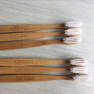

Producto
A nivel mundial y por año más de 4.700 millones de cepillos de dientes son desechados y al no degradarse, causan la muerte de una gran cantidad de animales y contaminan el planeta.
¿Qué diferencia a los cepillos MERAKI de los convencionales?
- Es Biodegradable
- Vida útil y calidad
- Diseño estético
- Sustentable
Tanto el mango de los cepillos MERAKI como sus cajas son BIODEGRADABLES.
¿Qué quiere decir esto? Que a diferencia de los plásticos, que son derivados de combustibles fósiles muy permanentes que no se descomponen en el entorno de la naturaleza y se acumulan, el bambú con el que se fabrican los mangos de los cepillos puede ser degradado y vuelto a formar parte del suelo de manera natural.
El único componente no biodegradable son las cerdas (3% del total del producto) para garantizar la misma vida útil y funcionalidad que un cepillo convencional.
Nuestros cepillos tienen la misma vida útil que los cepillos de dientes convencionales fabricados con plástico. Sus cerdas están fabricadas a base de Nylon para asegurar una calidad óptima de lavado para nuestros clientes. El bambú del mango puede perdurar por años cuando se almacena en un lugar seco.
El tiempo recomendado de reemplazo del cepillo considerando un uso diario del mismo es de 2-3 meses.
El diseño estético de los cepillos MERAKI concilia la higiene dental de nuestros clientes con sus gustos. Por primera vez un cepillo de dientes es amigable a la vista y continua cumpliendo su función principal, el cuidado bucal.
El bambú es una de las plantas con la mayor tasa de crecimiento del mundo. Su cosecha se realiza sobre montes silvestres en China, donde abarca grandes extensiones. Los rebrotes que quedan post-cosecha, alcanzan el tamaño de los individuos maduros en tan solo dos años, sin necesidad de replantar, utilizar fertilizantes, herbicidas o riego artificial!
¿Es lo mismo un material biodegradable que uno ecológico?
Un material biodegradable significa que puede ser descompuesto o desintegrado en poco tiempo por organismos vivientes, y ser reintroducido dentro de los ciclos de los nutrientes en la naturaleza.
Por su parte, los materiales ecológicos son aquellos que, debido a su diseño, composición de sus materias primas, modo de empleo, vida útil y demás características, tienen un impacto menos negativo (o neutro) sobre el medio ambiente y pueden ser, una vez desechados y reinsertados en la naturaleza.
El menor impacto sobre el medio ambiente se ve reflejado en una disminución de la huella de carbono de los productos, una vida útil más prolongada, y la utilización de materiales biodegradables que no son acumulables, como por ejemplo, el bambú.
¿Es bueno el bambú para el medioambiente?
Sí, pero ¿por qué?
Tiene muy rápido crecimiento (secuestrando en el proceso grandes cantidades de CO2, gas de efecto invernadero).
Contiene agentes antibacterianos de origen natural , por lo cual no necesita fertilizantes ni pesticidas para crecer.
Es una de las plantas con mayor tasa de crecimiento y rebrota de raíz, por lo que en tan solo dos años alcanza su tamaño adulto, posibilitando nuevamente su cosecha.